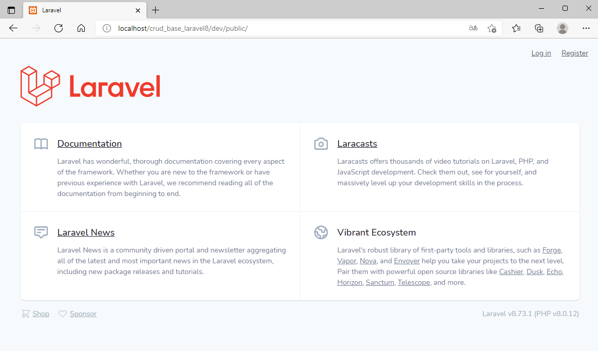
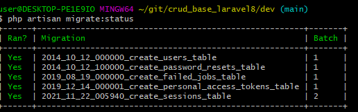
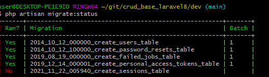
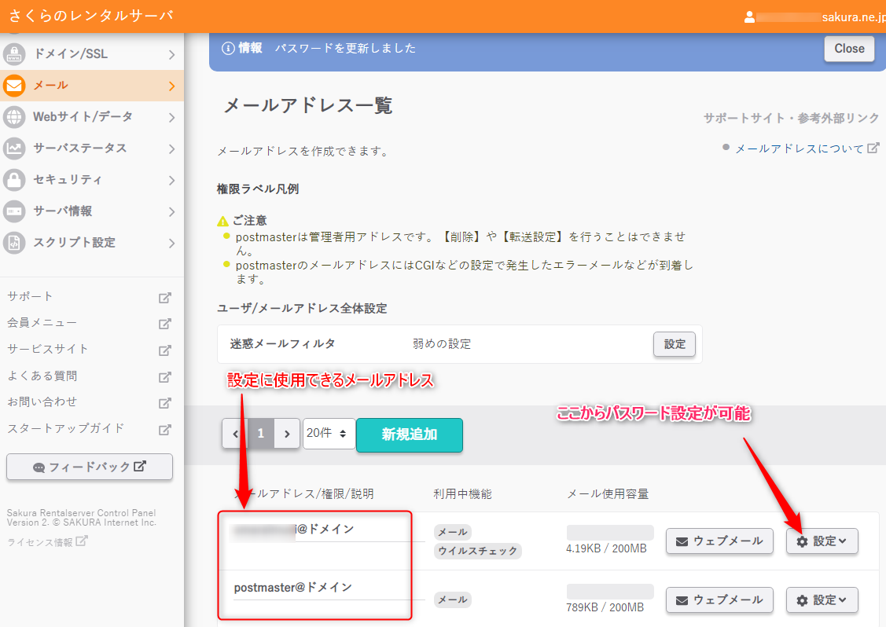

Laravel8のインストールと初期設定
追記：2022年7月現在、Laravel9が登場している。インストール手順はlaravel8版とほぼ同手順でいけるようだ。ただ,npmまわりで不具合がある模様。インストールの概要
Composerを利用してインストールしなければならないようだ。また、コマンドラインで初期設定がいろいろ必要である。
前提条件
- Windows10
- xampp(2021年11月時点での最新版。PHP8.0)
- コマンドラインツールにGitBash（Git for windowsに含まれるツール）を利用。
- GitBashでnpmコマンドが使えるようにしてあること。
- GitBashでphpコマンドが使えるようにしてあること。
手順
-
Windows10に新しくxamppをインストールしたばかりなら、php_intlを有効にする必要がある。
php.iniを開き、下記のパラメータを有効にする。(「;」をはずす)
extension=intl
extension=gd

php.iniを変更したらApacheの再起動を忘れぬように。
-
GitBashを起動。
任意のプロジェクトを作成し、cdコマンドでそのプロジェクトの場所まで移動する。
今回の手順例では,プロジェクト名を「crud_base_laravel8」としている。$ cd ~/git/crud_base_laravel8
-
Windows環境だとttyなんとかのエラーがよく出るため、それ防止用に下記コマンドを実行。
$ exec winpty bash
-
composer.pharをダウンロードする
$ php -r "readfile('https://getcomposer.org/installer');" | php -
Laravel8をインストール
$ php composer.phar create-project "laravel/laravel=8.*" dev
-
localhost環境(開発環境)でシンボリックリンクを作成する。
「C:\xampp\htdocs」配下に直接プロジェクトを作成しているならこの処理は不要。
手順
Windows Power Shellを管理者として実行する。（Windows Power Shellのアイコン右クリック→管理者として実行」
下記コマンドでシンボリックリンクを作成する。。
cmd /c mklink /D C:\xampp\htdocs\crud_base_laravel8 C:\Users\user\git\crud_base_laravel8
-
ブラウザにて「http://localhost/crud_base_laravel8/dev/public/」にアクセスし、エラーがでずにページが表示されたらとりあえずOK.

-
xamppでphpMyAdminを起動し、新しくデータベースを作成する。
照合順序は「utf8mb4_general_ci」を推奨。
テーブルは作成しなくてよい。後ほど、マイグレーションでいくつかテーブルを自動生成する。
例ではcrud_base_laravel8というデータベース名でデータベースを作成した。
-
DB設定をする。「.env」ファイルを開き、以下のような記述に書き換える。
DB_CONNECTION=mysql DB_HOST=localhost DB_PORT=3306 DB_DATABASE=crud_base_laravel8 DB_USERNAME=root DB_PASSWORD=
-
続いていくつかの初期設定をする。
再びGitBashに戻り、devディレクトリに移動する。$ cd dev
-
ログインフォームなど使えるようにするため、composerで下記をインストールする。
$ composer require laravel/ui
参考：ログイン画面を作成(Laravel7版) -
下記のコマンドを実行し、ログイン画面関連のファイルを自動作成する。
php artisan ui vue --auth
-
sessionsテーブルを作成するために必要なコマンド。（マイグレーション情報に追加？）
$ php artisan session:table
-
マイグレーションを実行する。DBに最低限必要なテーブルをいくつか自動生成する。
$ php artisan migrate
-
マイグレーションが成功したかどうか下記のコマンドで調べられる。
$ php artisan migrate:status
成功例

失敗例。sessionsテーブルだけ作成できていないケース

-
続いて、jsとcssのパッケージをインストールおよびビルドする必要がある。
Bootstrapを使いたいなら下記コマンドを実行する。 するとnpmのインストール情報に追加されるようだ。このタイミングではまだインストールされていない。
$ php artisan ui bootstrap
-
Vue.jsを使いたい場合
$ php artisan ui vue
他のJSライブラリについて -
jsおよびcssのインストールおよびビルド。
この辺りでエラーが頻発してしまい、いろいろ試行錯誤してしまった。
なのでコマンドの実行順は推測である。
インストール。npm install
アップデート。試行錯誤で試したがこれで上手くいったのかは不明。npm update
ビルド。エラーが頻発する。エラーが出た場合、上記のコマンドをもう一度試みる。npm run dev
-
再びブラウザにて「http://localhost/crud_base_laravel8/dev/public/」にアクセスし、画面右上のRegstryをクリック。
ログインフォームが表示されるので、画面右上のRegstryから適当にユーザー登録する。
なお、レイアウトが崩れているなら、上記の「jsおよびcssのインストールおよびビルド」に失敗している。

-
これで開発環境は整ったと思われる。多分。
終わり。
-
追記：DBテーブルのフィールド型がdatetime型だと空値で苦しむことになる。
対策→Larevelの日付更新エラー SQLSTATE[22007]: Invalid datetime format Larevelの日付更新エラー
本番環境へlaravel8をインストール | PHPバージョンが違う環境に移植 PHP7.4 ←→PHP8
- 開発環境(localhost)はPHP8
- 本番環境（レンタルサーバー）はPHP7.4
laravel8はphp7.3以上で動作するので開発環境のPHP8でも本番環境のPHP7.4でも問題ないはずである。 しかし実際アップロードしてみるとエラーがでてしまう。
原因はvendor(dev/vendor)に存在するごく一部のライブラリにある。（2021年12月時点では「psr/log」ライブラリがネックになる）
vendorはComposerでインストールされているため、composer.jsonを書き換えれば良さそうなものだが、これもまた難解と言わざるを得ない。
しかし簡単な方法もある。 本番環境に適当なディレクトリを作成し、そこにlaravel8をインストールする。そのインストール先の「vendor」を使えばよいのだ。 このvendorを開発中のプロジェクトのvendorと置き換えればPHP8環境で開発されたプロジェクトをPHP7.4環境で動かすということが可能になる。
以下に本番環境（サーバー環境）にlaravel8をインストールする手順を示す。
手順（さくらサーバーで検証）
-
SSHでレンタルサーバー（本番環境）にログインする。
$ ssh -l hoge hoge.sakura.ne.jp
-
laravel8をインストール先する場所を適当なディレクトリとして作成し、そのディレクトリに移動する。（例ではtempとする）
cd www/ mkdir temp cd temp
-
下記コマンドでComposerをダウンロードする。tempディレクトリにcomposer.pharがダウンロード配置される。
% php -r "readfile('https://getcomposer.org/installer');" | php -
Composerでlaravel8をインストールする。
% php composer.phar create-project "laravel/laravel=8.*" dev
-
devディレクトリに移動
% cd dev
-
devディレクトリにもComposerをダウンロード
% php -r "readfile('https://getcomposer.org/installer');" | php -
ComposerでLaravelのUIパッケージをインストールする。
% php composer.phar require laravel/ui
-
以上。
あとは「/temp/dev/」へ開発しているプロジェクトに移植すればOK。
laravel7とlaravel8の大きな違い
| 説明 | laravel7 | laravel8 |
|---|---|---|
| web.php: ルートの書き方が変わった。 | Route::get('neko', 'NekoController@index'); | Route::get('neko', 'App\Http\Controllers\NekoController@index'); |
created_atとupdated_atのフィールド名を変更する
Laravel8の日時系フィールドはcreated_atとupdated_atである。 別のフィールド名に変更したい場合はマイグレーション側とモデルクラスに記述する必要がある。モデルクラス側だけ変更してもエラーになる。マイグレーション
$table->timestampTz('created')->nullable();
$table->timestampTz('modified')->nullable();
モデルクラス
class Tanuki extends Model
{
const CREATED_AT = 'created';
const UPDATED_AT = 'modified';
}
別の方法
テーブルにcreated_atとupdated_atが存在しないならdatetime型で新規追加する方法もある。テーブルにcreated_atとupdated_atが存在しないときに起きるエラー。
SQLSTATE[42S22]: Column not found: 1054 Unknown column 'users.updated_at' in 'field list' (SQL: update `users` set `role` = oparator, `users`.`updated_at` = 2021-11-25 09:14:28 where `id` = 218)
ユーザー名とメールアドレスの両方でログインできるようにする
修正するファイルはLoginController.phpとlogin.blade.php。ユーザー名はusersテーブルの「name」フィールドの値である。
「name」は日本語名の入力が可能。さらに日本語のユーザー名によるログインも可能になる。 とはいえ、日本語のユーザー名は何かと問題も多そうなので半角英数字でユーザー名登録させる仕様にしたほうが良い。
参考サイト：https://php-archive.net/php/laravel-auth-with-username-or-email/
LoginController.php
ルート\app\Http\Controllers\Auth\LoginController.php赤字のコードを追記する。
use AuthenticatesUsers;
/**
* Where to redirect users after login.
*
* @var string
*/
protected $redirectTo = RouteServiceProvider::HOME;
/**
* Create a new controller instance.
*
* @return void
*/
public function __construct()
{
$this->middleware('guest')->except('logout');
}
public function username()
{
return 'name';
}
protected function attemptLogin($request)
{
$username = $request->input($this->username());
$password = $request->input('password');
if (filter_var($username, ¥FILTER_VALIDATE_EMAIL)) {
$credentials = ['email' => $username, 'password' => $password];
} else {
$credentials = [$this->username() => $username, 'password' => $password];
}
return $this->guard()->attempt($credentials, $request->filled('remember'));
}
}
ルート\resources\views\auth\login.blade.php
以下の部分だけ、emailとなっている箇所をnameに置換するだけ。
<div class="form-group row">
<label for="name" class="col-md-4 col-form-label text-md-right">ユーザー名 / メールアドレス</label>
<div class="col-md-6">
<input id="name" type="name" class="form-control @error('name') is-invalid @enderror" name="name" value="{{ old('name') }}" required autocomplete="name" autofocus>
@error('name')
<span class="invalid-feedback" role="alert">
<strong>{{ $message }}</strong>
</span>
@enderror
</div>
</div>
修正前：login.blade.php
参考までにlogin.blade.phpの修正前はこうなっている。
<div class="form-group row">
<label for="email" class="col-md-4 col-form-label text-md-right">{{ __('E-Mail Address') }}</label>
<div class="col-md-6">
<input id="email" type="email" class="form-control @error('email') is-invalid @enderror" name="email" value="{{ old('email') }}" required autocomplete="email" autofocus>
@error('email')
<span class="invalid-feedback" role="alert">
<strong>{{ $message }}</strong>
</span>
@enderror
</div>
</div>
メール送信設定 (パスワード再送信に利用。さくらレンタルサーバーを例にする)
.envファイルにメール設定する。アカウント、メールアドレスはさくらコントロールパネルにて確認する。メールアドレスのパスワードを覚えていないなら再発行する。
さくらコントロールパネル
メール設定関連画面
ルート\.env
MAIL_MAILER=smtp MAIL_HOST=アカウント.sakura.ne.jp MAIL_PORT=587 MAIL_USERNAME=アカウント@アカウント.sakura.ne.jp MAIL_PASSWORD=メールのパスワード MAIL_ENCRYPTION=tls MAIL_FROM_ADDRESS=アカウント@アカウント.sakura.ne.jp MAIL_FROM_NAME="サンプルシステム"
Laravelでバッチ処理を作る | コンソール | コマンド | Command
手順
- cdコマンドでプロジェクトのルートディレクトリへ移動する。
-
ソースファイルを作成するコマンドを実行する。
php artisan make:command TestBatch
コマンド実行後、 「ルート/app/Console/Commands/TestBatch.php」が作成される。 -
ソースファイルを編集する
ルート/app/Console/Commands/TestBatch.php
編集例
<?php namespace App¥Console¥Commands; use Illuminate¥Console¥Command; use Illuminate¥Support¥Facades¥DB; // DBを扱えるようにする class TestBatch extends Command { /** * The name and signature of the console command. * * @var string */ protected $signature = 'batch:test'; // コマンド名を定める。 /** * The console command description. * * @var string */ protected $description = 'テスト用バッチ'; // コマンド説明文 /** * Create a new command instance. * * @return void */ public function __construct() { parent::__construct(); } /** * Execute the console command. * * @return int */ public function handle() { // ここに処理を記述する。 echo 'バッチ処理を開始します。'; // DBアクセスの例 $data = ¥DB::select('select * from patients where id= 1'); var_dump($data); echo 'バッチ処理を終了しました。'; return Command::SUCCESS; } } -
バッチ処理を実行する。
cdコマンドでプロジェクトのルートへ移動後、下記コマンドを実行する
php artisan batch:test
-
CRONへの設定例
cd /home/ユーザー名/www/example/;php artisan batch:patient_reset
※さくらレンタルサーバーの場合
Laravel8のCORS クロスドメインAJAX | 自作API
基本的に通常のAjaxのやり方と同じ。通常のAjaxと異なる点
- csrf_tokenは不要。
- _methodをキーに値(getまたはpost)をセットしてAjax送信する必要がある。
- cors.phpにパスの許可を記述。
Laravel8からはCORSが簡単になっているとのこと。
HTML
<button type="button" class="btn btn-primary" onclick="corsTest();">CORSテスト</button> <div id="err" class="text-danger"></div> <div id="res" class="text-success"></div>
JavaScript
function corsTest(){
console.log('CORSテスト');
let sendData={neko_name:'cat&dog%',same:{hojiro:'ホオジロザメ',shumoku:'シュモクザメ'}};
let fd = new FormData();
let send_json = JSON.stringify(sendData);//データをJSON文字列にする。
fd.append( "key1", send_json );
fd.append('_method','get'); // Laravelでは_methodも送信しないとエラーになってしまう。
let ajax_url = "https://amaraimusi.sakura.ne.jp/crud_base_laravel8/dev/public/web_api/cors_test";
//let ajax_url = "http://localhost/crud_base_laravel8/dev/public/web_api/cors_test";
// AJAX
jQuery.ajax({
type: "post",
url: ajax_url,
data: fd,
cache: false,
dataType: "text",
processData: false,
contentType : false,
})
.done((res_json, type) => {
let res;
try{
res =jQuery.parseJSON(res_json);//パース
}catch(e){
jQuery("#err").append(res_json);
return;
}
console.log(res);
$('#res').html(res.success);
})
.fail((jqXHR, statusText, errorThrown) => {
let errElm = jQuery('#err');
errElm.append('アクセスエラー');
errElm.append(jqXHR.responseText);
alert(statusText);
});
}
PHP コントローラクラス
<?php
namespace App¥Http¥Controllers;
use App¥Http¥Controllers¥AppController;
use Illuminate¥Http¥Request;
use App¥Models¥WebApi;
use Illuminate¥Support¥Facades¥DB;
class WebApiController extends AppController
{
/**
* APIテスト
*/
public function cors_test(){
$param_json = $_POST['key1'];
$param = json_decode($param_json,true);//JSON文字を配列に戻す
$param['success'] = 'success';
$json = json_encode($param, JSON_HEX_TAG | JSON_HEX_QUOT | JSON_HEX_AMP | JSON_HEX_APOS);
return $json;
}
}
routes/web.php
Route::get('web_api/cors_test', 'App¥Http¥Controllers¥WebApiController@cors_test');
config/cors.php
CORSにするための需要な設定。'paths' => ['web_api/cors_test' ,'api/*', 'sanctum/csrf-cookie'], 'allowed_methods' => ['*'], 'allowed_origins' => ['*'], 'allowed_origins_patterns' => [], 'allowed_headers' => ['*'], 'exposed_headers' => [], 'max_age' => 0, 'supports_credentials' => false,
パスワードをハッシュ化する | パスワードがハッシュと一致するかの確認
パスワードをハッシュ化する
$pw = 'abcd1234';
$hash = \Hash::make('abcd1234'); // パスワードをハッシュ化する。
ハッシュ化した値は実行するたびに毎回異なる。なのでパスワード一致を確認したい場合、下記の「\Hash::check」を利用すること。
パスワードがハッシュと一致するかの確認
\Hash::check(パスワード, ハッシュ)
if (\Hash::check('abcd1234', '$2y$10$deYZpmp9luNvKpxt2KN8KOED09XNPmJy4beLrJkyqyOYpS9A9Q2U.')) {
echo 'YES';
}else{
echo 'No';
}
公式資料
ルートパス(基本URL)を取得 | cssファイルやjsファイル読み込み用
Laravelにおけるcssファイルやjsファイル読込用の基本URL（ルートパス）を取得する方法
Laravelの場合、下記のindex.phpが起点になっている。このファイルに基本URL取得処理を記述すると良い。 /プロジェクト名/dev/public/index.php$base_url = rtrim(dirname($_SERVER["SCRIPT_NAME"]), '/'); // → /プロジェクト名/dev/public
補足情報
下記はほぼ同じなのだが、PHP_SELFはWEBクエリ部分（?以降）にXSSの脆弱性があるとのこと。なのでSCRIPT_NAMEを利用する。$_SERVER['SCRIPT_NAME']
$_SERVER['PHP_SELF']
LaravelにてPDOのインスタンスを取得する
$pdo = \DB::connection()->getPdo();